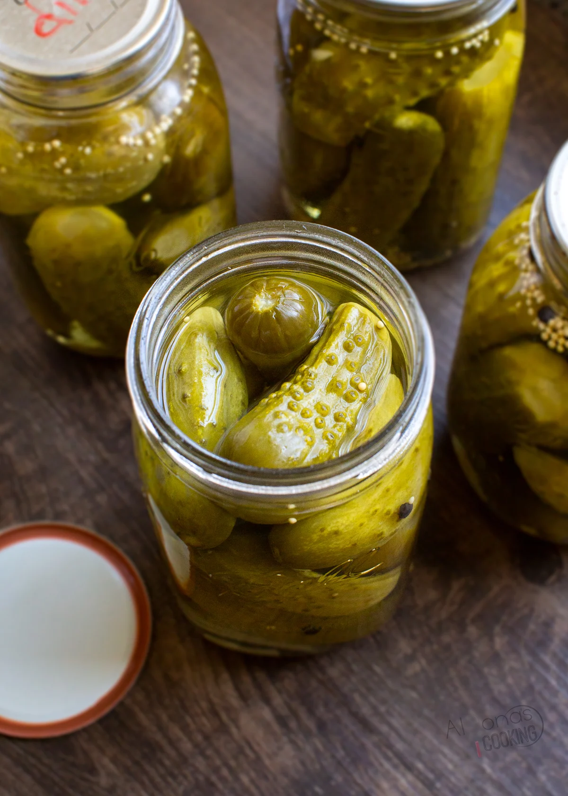

Pickles

This is one of my favorite snacks. The best ones are homemade!
List of ingredients
- About 10 pickling cucumbers
- 2 teaspoons of mustard seeds
- About 10 sprigs of fresh dill
- 2 cups of water
- 2 cups of white vinegar
- 1/4 cup of white sugar
- 2 tablespoons of sea salt
Here is how to make Ceviche!
- Slice the cucumbers as you would like (spears, chips, etc)
- Divide the cucumbers, mustard seeds, and dill amongst the jars
- Heat the water, vinegar, sugar, and salt in a saucepan until the sugar and salt are dissolved
- Pour over pickles, letting it cool to room temperature and then store the jars in the fridge
- They are ready to eat in 2 days, but the best flavor will be around day 5 or 6. Enjoy!
Back